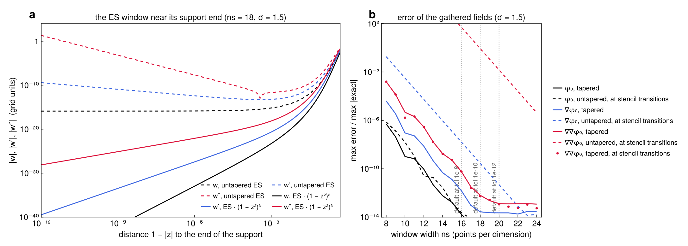

Derivatives through the NUFFT
Inside the padded sample box, SmoothField represents $\varphi_0 = N[\rho]$ by its truncated-kernel Fourier coefficients. For modes $|k| \le k_{\max} = \pi/h$,
\[\varphi_0(y) = C \sum_{k} \hat c_k\, e^{i k\cdot(y - y_c)}, \qquad \hat c_k = 2\left(\frac{\sin(L|k|/2)}{|k|}\right)^2 \hat\rho_k ,\]
where $\hat\rho_k$ comes from one type-1 NUFFT (FINUFFT) of the samples. The surface corrections need $\varphi_0$, $\nabla\varphi_0$ and $\nabla\nabla\varphi_0$ at every surface node and target: 10 fields.
Two ways to get the derivatives
Spectral. Multiply $\hat c_k$ by $ik_a$ and $-k_a k_b$. That is 10 coefficient arrays and 10 type-2 NUFFTs.
Through the interpolant (used here). Deconvolve $\hat c_k$ once by the window's Fourier factors, and transform onto one real fine grid $g$ of $\sigma \times$ the mode count per axis ($\sigma = 1.5$). Each value is then a tensor-product sum over the $n_s^3$ grid points around the target. With $t_d$ the offset in grid units and $\alpha_d$ the grid-to-physical scale,
\[\begin{aligned} \varphi_0 &\approx C \sum_\ell g_\ell\, w(t_1)\, w(t_2)\, w(t_3), \\ \partial_1 \varphi_0 &\approx -C\alpha_1 \sum_\ell g_\ell\, w'(t_1)\, w(t_2)\, w(t_3), \\ \partial_1 \partial_2 \varphi_0 &\approx C\alpha_1\alpha_2 \sum_\ell g_\ell\, w'(t_1)\, w'(t_2)\, w(t_3), \qquad \partial_1^2 \varphi_0 \approx C\alpha_1^2 \sum_\ell g_\ell\, w''(t_1)\, w(t_2)\, w(t_3), \end{aligned}\]
and likewise for the other directions.
These are the exact derivatives of the NUFFT interpolant. They are what automatic differentiation of the type-2 interpolation with respect to the target coordinates would return, computed analytically and fused into one pass that reads each grid value once. The derivatives are therefore only as good as $w'$ and $w''$, which constrains the window.
The window
\[w(z) = e^{\beta\left(\sqrt{1 - z^2} - 1\right)}\, (1 - z^2)^3, \qquad z = \frac{t}{n_s/2} \in [-1, 1], \qquad \beta = 0.97\,\pi\, n_s \left(1 - \frac{1}{2\sigma}\right).\]
- Shape. This is FINUFFT's exponential of semicircle (ES), with its shape parameter $\beta$, times a taper $(1 - z^2)^3$.
- Evaluation. $w$, $w'$ and $w''$ are evaluated analytically.
- Fourier factors. They are computed by Gauss–Legendre quadrature of the same window, so the deconvolution is consistent with the gather.
Why the taper. The plain ES window is cut off at $|z| = 1$, where $\sqrt{1 - z^2}$ has infinite slope. Near the end of the support, $w' \propto (1 - |z|)^{-1/2}$ and $w'' \propto (1 - |z|)^{-3/2}$, both times $e^{-\beta}$ (panel a). For most targets the factor $e^{-\beta} \approx 10^{-16}$ hides this. But a target whose stencil has a point just inside the support end, at a stencil transition, picks up the singular $w''$.
- Without the taper. At stencil transitions the Hessian error is $O(1)$ at the default width (dashed red, panel b), and still $10^{-5}$ at 24 points.
- Where the targets fall. Random targets rarely land within $10^{-9}$ of a transition. A large target set, or grid-aligned nodes such as those on box faces, does.
- With the taper. The taper makes $w$, $w'$ and $w''$ vanish continuously at $|z| = 1$. The error at transitions (dots) is then the same as at random targets.
A fitted piecewise-polynomial window, which FINUFFT uses for speed, is no alternative. Each derivative of the fit loses about a factor $N^2$ (Markov's inequality), and the Hessian stalls near $10^{-9}$.
How many points
$n_s$ follows FINUFFT's ES rule for value accuracy, $n_s = \lceil \ln(1/\varepsilon) / (\pi\sqrt{1 - 1/\sigma}) \rceil$. It is applied at the tighter $\varepsilon = 10^{-4}\,\mathrm{tol}$ (window_tol), because the derivatives need more points than the values. Panel b shows the error of each gathered field against $n_s$: a well-resolved Gaussian, the NUFFT at $10^{-14}$, and errors relative to each field's maximum. The smallest width with error $\le \mathrm{tol}$, at random targets and at transitions:
tol | $\varphi_0$ | $\nabla\varphi_0$ | $\nabla\nabla\varphi_0$ | FINUFFT, values only | default $n_s$ |
|---|---|---|---|---|---|
| $10^{-8}$ | 10 | 12 | 14 | 11 | 16 |
| $10^{-10}$ | 13 | 14 | 16 | 13 | 18 |
| $10^{-12}$ | 14 | 16 | 18 | 16 | 20 |
- Each derivative costs about two points. Values need about FINUFFT's width. The Hessian needs about four points more.
- The default keeps two points of margin over the Hessian's need, because the fields of a real campaign are less smooth than one Gaussian.
- Override it with
SmoothField(src; window_ns = 16). Widths beyond 20 gain nothing: at about $10^{-13}$ the error is set by the type-1 NUFFT and the samples.

Cost
- Per target. $n_s^3$ grid reads (5832 at $n_s = 18$) and three running sums per grid line give all 10 fields at once. 100,000 targets take about 0.2 s at 16 threads.
- Memory. The gather is memory-bound, so a narrower window helps less than $n_s^3$ suggests.
- The grid. One real array of $(\sigma m)^3$ doubles, for $m$ modes per axis. It is built once per density with one FFT.
Alternatives that were measured (in DielectricBIE.jl, from which this evaluator comes):
- A prolate (PSWF) window with the same taper saves about one point. Its Legendre-series evaluation costs more than that saves.
- A larger shape parameter ($1.1\beta$) saves about two points at equal accuracy.
- $\sigma = 1.25$ halves the grid's memory, for one more point.